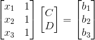

这时有人会问为什么要求一个接近的解，我们来举个机器学习常见的例子，比如有三个点A(2,1),B(4,3),C(6,3)，那如果有一个点D其横坐标为7，那么其纵坐标最有可能是多少？
首先看下A，B，C的点的分布情况：

接着我们需要的是用一条直线来模拟出其点分布的趋势，那么哪条直线能更好地解释这个趋势呢？
很明显的，下面这条直线最能表现出该分布的趋势：
而要求该直线一般用的都是最小二乘法。就以此为例，假定直线为Y=CX+D，那么代入3组X就能求出真实值b与计算值p的误差e，如下图：
可得以下公式：
而最小二乘法要求的是f(e)的最小值：
我们将x1,x2,x3代入公式，然后用高数求导的方式来求最小值：
这样就把直线给求出来了。接下来我们来做一件有意思的事，我们利用上节所讲的投影矩阵来算一下这条直线如何？首先列出公式：
转换成矩阵形式，已知AX=b无解：

但我们知道AX=p有解：
我们要做的是让e的平方和尽可能小：
这不就是B和P点的两点距离么？
那么问题就变成了如何在空间A中找到一个点P与B点的距离最短，毋庸置疑P点是B点的投影点。那么我们就可以利用投影矩阵来算X了，分别左右各乘以A的转置来求X：
将x1,x2,x3,b1,b2,b3数值代入得：
与求导出来的结果一样！所以最小二乘法可以利用投影矩阵公式来计算出最优直线，也就是求出以下的解：
最后再强调一点，e=(e1,e2,e3)与p正交，e与矩阵A正交，如图就可以看出：
ok，下一节再来介绍个特殊的矩阵——单位正交矩阵。